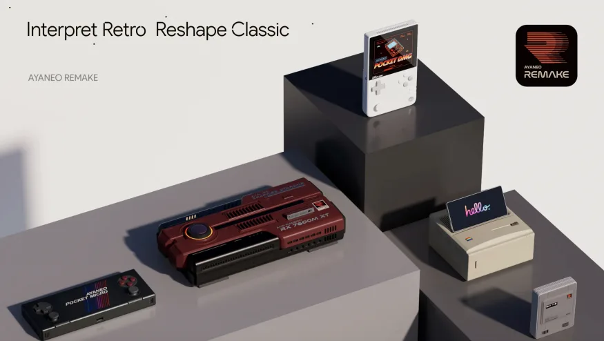
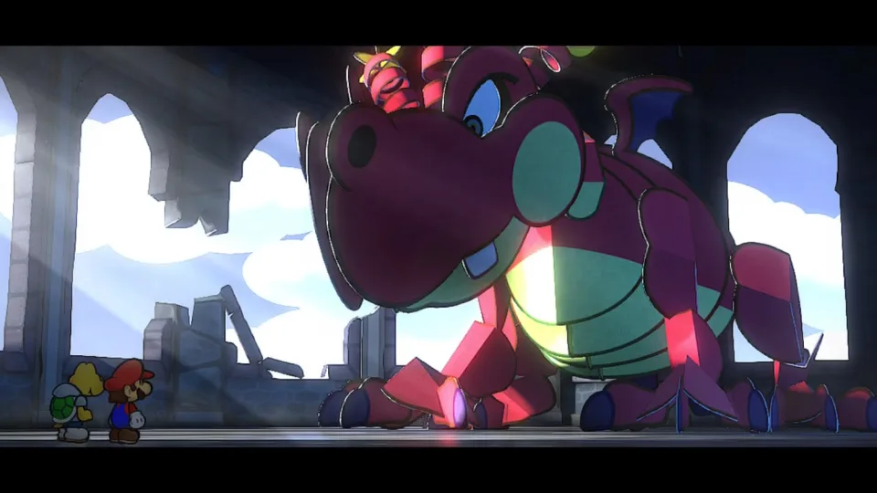
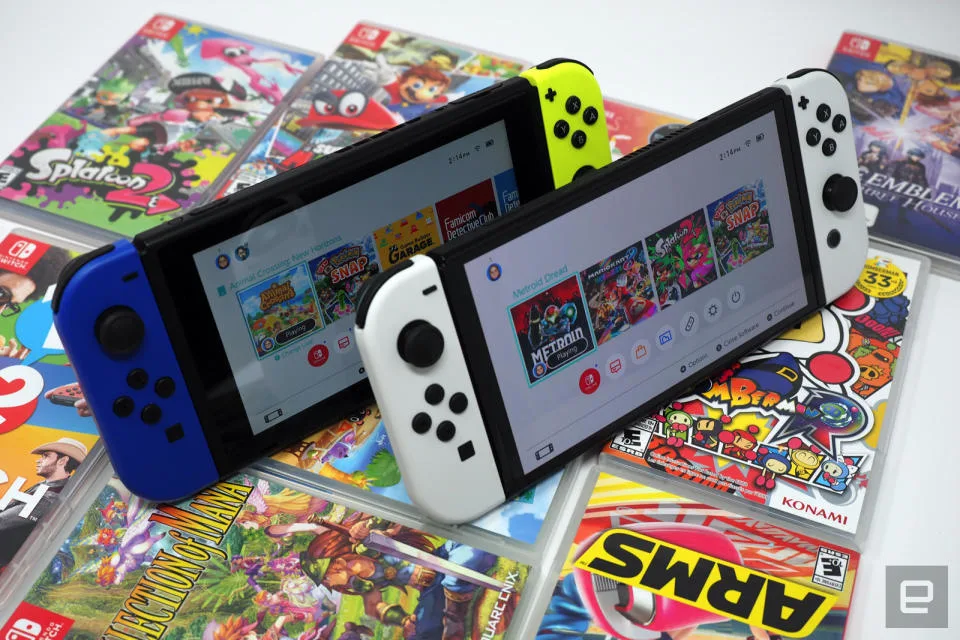

Noticias gaming

Ayaneo's latest handhelds are inspired by the Game Boy and GB Micro
The company also teased a forthcoming mini PC and a mobile dock.
Ayaneo just announced a bunch of new products, including the portable gaming consoles Pocket DMG and Pocket Micro. The company also announced a new mini PC.

Paper Mario The Thousand-Year Door review: A Switch remake (mostly) befitting a masterpiece
Yes, it’s still an absolute treasure.
Ayaneo just announced a bunch of new products, including the portable gaming consoles Pocket DMG and Pocket Micro. The company also announced a new mini PC.

Nintendo snaps up a studio known for its Switch ports
Shiver Entertainment is currently owned by the Embracer Group.
Nintendo is buying Florida-based studio Shiver Entertainment, mostly known for its Switch ports, from the Embracer Group.